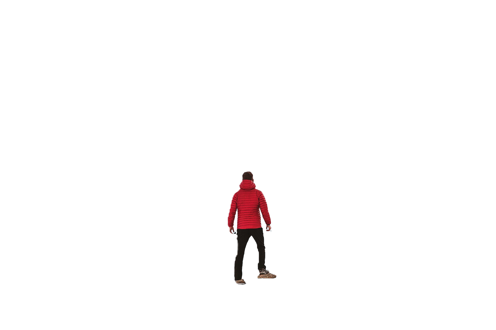

PARALLAX-WEBSITE


PARALLAX-EFFECT
A parallax effect is a visual design technique where background elements move slower than foreground elements, creating an illusion of depth and immersion. This effect mimics how objects at different distances appear to move at different speeds when viewed from a moving perspective, enhancing the sense of three-dimensionality. Parallax effects are widely used in web design, video games, animations, and photography to create dynamic and engaging visuals. On websites, this effect is often applied during scrolling, making the background move at a slower rate than the foreground content. This subtle movement adds depth, making the user experience more interactive and visually appealing.
RIDING
Riding is a skill that combines coordination, discipline, and a deep understanding of movement. Whether it’s the smooth glide of a bicycle, the roaring power of a motorcycle, or the rhythmic gait of a horse, each form of riding offers its own unique experience. It provides a sense of freedom, allowing riders to explore new places, challenge their limits, and connect with their surroundings in a way that walking or driving cannot. The wind rushing past, the steady grip of the reins or handlebars, and the rhythmic motion create an exhilarating yet calming effect. Beyond the physical benefits, riding also sharpens mental focus, requiring quick decision-making and adaptability to different terrains and conditions.
PARA-GLIDING
Paragliding is an exhilarating adventure sport that allows individuals to soar through the sky with the freedom of a bird. Using a lightweight, fabric wing and harness, pilots launch from hills or cliffs, catching thermals to stay aloft and glide effortlessly over breathtaking landscapes. The sensation of floating high above the ground, with the wind as the only sound, is both thrilling and peaceful. Paragliding requires skill, control, and an understanding of weather patterns to navigate safely. Whether for recreation or competition, it offers a unique blend of adrenaline and serenity, making it one of the most captivating ways to experience the sky.
SURFING
Surfing is an exhilarating water sport that combines balance, agility, and a deep connection with the ocean. Riders paddle out into the waves, waiting for the perfect swell before swiftly standing on their board and gliding across the water’s surface. The rush of catching a wave, the rhythmic motion of the sea, and the challenge of mastering different conditions make surfing both thrilling and meditative. It requires patience, strength, and an understanding of the ocean’s movements. Whether for sport, recreation, or simply the love of the sea, surfing offers an unmatched sense of freedom and adventure.
SWIMMING
Swimming is a full-body exercise that combines strength, endurance, and grace as one moves through the water. Whether in a pool, lake, or ocean, it provides a refreshing and low-impact way to stay fit while improving cardiovascular health. The rhythmic strokes, controlled breathing, and buoyant sensation create a sense of relaxation and freedom. Swimming is not only a sport but also a vital life skill that enhances confidence and safety in the water. From the thrill of competitive racing to the tranquility of a leisurely swim, it offers both physical and mental benefits, making it an enjoyable and rewarding activity for people of all ages.
BUNGEE-JUMPING
Bungee jumping is an adrenaline-pumping adventure sport that involves leaping from a great height while attached to a strong, elastic cord. As the jumper plunges downward, the sensation of free fall creates an intense rush before the cord stretches and rebounds, sending them bouncing back up. The combination of fear, excitement, and ultimate exhilaration makes bungee jumping a thrilling experience. It requires courage and trust in the equipment, but the reward is an unmatched feeling of freedom and accomplishment. Whether from a bridge, crane, or platform, bungee jumping is a daring activity that pushes personal limits and leaves an unforgettable memory.